Toda cor mostrada na tela é uma mistura de vermelho, verde e azul
As cores em css podem ser representadas com o nome delas
Ex:

porem, tambem podem ser representadas por:
currentcolor palavra-chaveSão suportadas em todos os navegadores, é representado como um codigo de 9 numeros inteiros(000 000 000), sendo que cada um dos 3 valores é a intensidade de cada cor(vermelho, verde e azul) de 0 a 255
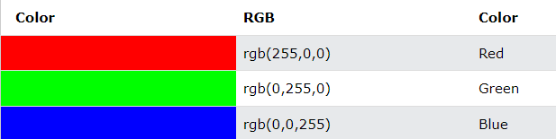Tons de cinza:
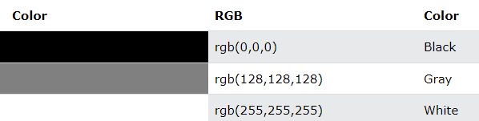Tambem são suportadas por todos os navegadores. as cores hexadecimais são representadas por uma hashtag(#) no começo e uma sequencia de 6 numeros inteiros(#000000) sendo bem parecido com as cores em RGB, porem, as cores hexadecimais envez de ir de 0 a 255, vão de 00 a FF(0 1 2 3 4 5 6 7 8 9 A B C D E F)
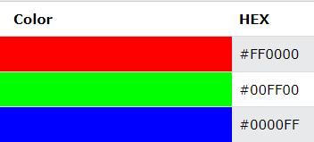Tons de cinza:
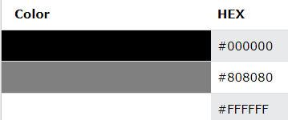o css suporta 140 nomes de cores
acesse aqui para ver todas as cores por nomecuriosidade: os monitores modernos hoje podem mostrar 16384 cores, porem antigamente só eram mostradas 216 cores que foram chamadas de "Safe Colors" ou "Cores Seguras"
as cores RGBA são uma extensão do RGB que adiciona a opacidade, para uma cor ser representada em RGBA ela tera o mesmo codigo que a cor RBG porem com um valor adicional no final que vai de 0 a 1 ditando sua opacidade sendo 1 a opacidade completa e 0 a minima opacidade (000 000 000 00)
Ex: 255 72 31 0.9
Ex: 255 72 31 0.7
Ex: 255 72 31 0.5
Ex: 255 72 31 0.3
cores HSL não suportadas pelos navegadores Edge, Chrome, Firefox, Safari, Opera 10+ e no IE9+.
HSl significa Hue, Saturation, and Lightness que em portugues fica Matiz, Saturação e Leveza
Matiz é o grau da cor em uma roda de 0 a 360, sendo que 360 é vermelho, 240 é azul e 120 é verde.
A Saturação é a intensidade da cor que vai em uma contagem de 0% até 100%, sendo que 100% é a cor na intensidade total e 0% é um cinza
Leveza é a quantidade de luz que você dar a cor, sendo que 0% de luz é uma cor escura e 100% de luz é uma cor clara
Funciona identicamente as RGBA
ex: 220, 90%, 30%, 0.8
As cores HWB que significam Hue, Whiteness, Blackness são um padrão novo de cores sugerido para o CSS4, então o HTML não tem suporte para esse padrão de cor (ainda)
As cores CMYK tambem são uma sugestão para o CSS4, elas possuem 4 valores: ciano, magenta, amarelo e preto(0% 0% 0% 0%).
Elas não são suportadas pelo HTML, porem, enquanto as telas usam as cores RGB, as impressoras usam as cores CMYK
NCol(Natural Colors ou Cores Naturais) é uma iniciativa da w3schools. O NCol é um sistema criado para facilitação da seleção de cores no HTML, porem o HTML não suporta o NCol.
Para representar as cores em NCol usamos uma letra que represa a cor e logo em seguida o numero(em porcentagem) de distancia daquela cor. Por exemplo, Y50%, essa cor é amarelo com 50% verde, que é a proxima cor.
Aqui esta a tabela com a letra de cada cor:
Agora que você ja sabe algumas formas de representar cores na web, vamos para a teoria das cores.
Na teoria das cores abordamos varios conceitos, categorias e definições importantes para web design e desenvolvimento web.
O primeiro circulo cormatico surgiu em 1666 com Isaac Newton logo após ele colocar um prisma polido sob raios solares e descobrir que os feixes de luz não são puros e sim formados por varias cores.
E assim ele desenvolveu a teoria que todas as cores são a mistura de vermelho, verde e azul e desenvolveu o primeiro circulo cromatico ou roda de cores.
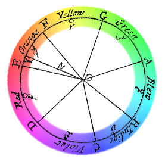Em 1766, o cientista Moses Harris criou a primeira roda de cor que clacifica o vermelho, verde e azul como cores primarias.
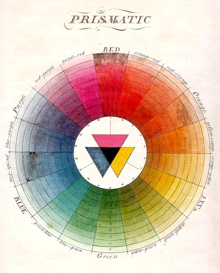
O sistema de cores usado na produção de cores pela luz é o RGB
O sistema de cores usados na impressão é o CMYK
O sistema de cores usados por artistas e pintores é o RYB(Red, Yellow e Blue)
As cores primarias são as cores principais de um determinado sistema
São as misturas das cores principais de determinado sistema
As cores tercearias são a mistura de uma cor secundaria e uma primaria.
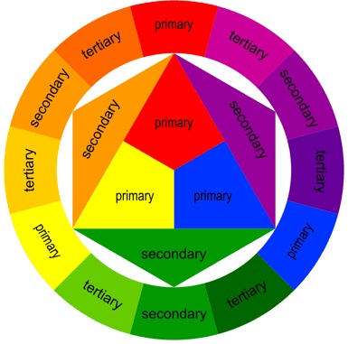A roda de cor mostra a relação entre as cores primarias, secundarias e tercearias
 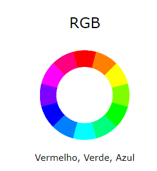 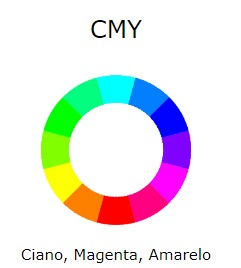 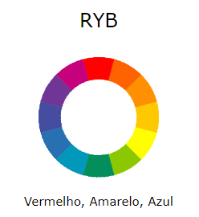
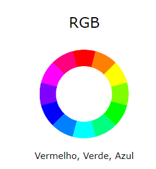 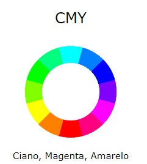 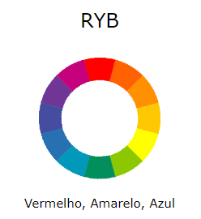